CacheScout：Learning Agent Execution for KV-Cache Management in Agentic Serving
原文：CacheScout.pdf
作者：Rui Zhang、Chaeeun Kim、Shaoting Feng、Kuntai Du、Yuhan Liu、Yi Zhong、Cheng-Wei Ching、Junchen Jiang、Liting Hu。
时间与状态：arXiv:2608.14624，2026-07-16。
研究层次：面向 Agent 的 KV cache 管理。
Motivation
CacheScout 处理的是比 Pythia 更局部的问题：多 Agent 应用中，GPU 缓存究竟应当保留哪些前缀。每个 Agent 角色往往带有一段稳定的前缀，包括 system prompt、工具定义、skills 和 few-shot 示例。论文将这一段称为 agent anchor。它与本次会话的用户问题、上游输出不同，后两者通常只在当前会话中出现；anchor 则可能跨轮次、跨 session 反复复用。
普通 vLLM 或 SGLang 按 prompt 内容划分 block，再以 LRU 等基于最近访问时间的策略淘汰。它能识别重复文本，却看不到这个 block 属于哪个 Agent，也不知道这个 Agent 在几步之后是否会再次出现。因此，某个暂时未被访问、但很快会重用的长 anchor 可能被误逐出缓存，下一次调用又要从头 Prefill。CacheScout 的重点不是改写 prefix matching，而是把 Agent 的执行语义传给缓存决策。
Key Insight
作者先回答了两个基础问题。第一，anchor 是否真的比 session history 更值得保留？测量结果显示，anchor block 的未来平均复用次数为 49–173 次，session-history block 只有 12–15 次，前者高 4–13 倍；工作流进行约 12 轮后，anchor 仍占每轮 prompt 的 43%–60%。因此缓存若把两者等价对待，会错过最有价值的可复用部分。
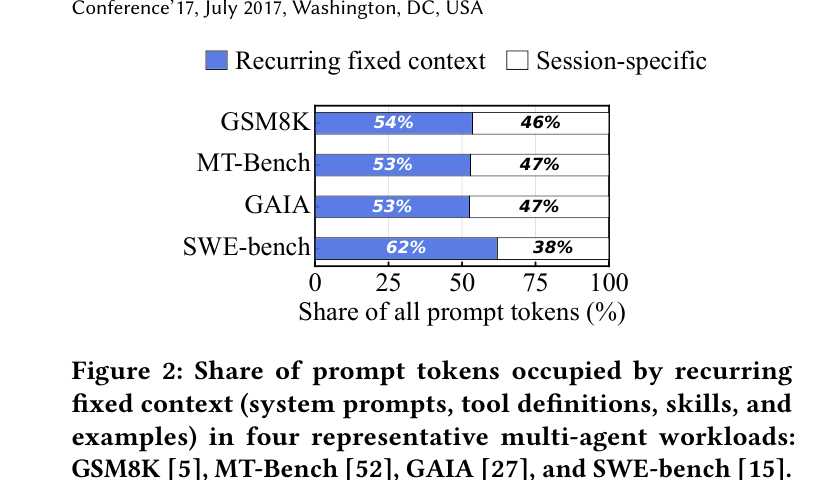
图 2：四个代表性 workload 中，Agent anchor 占 prompt 的 53%–62%，是最值得保护的重复上下文。
第二，动态 Agent workflow 是否完全不可预测？令 At 为第 t 步运行的 Agent，论文用
$$R=1-\frac{H(A_{t+1}|A_t)}{H(A_{t+1})}$$
衡量当前 Agent 对下一 Agent 的预测价值。Pipeline、Debate、SelectorGroupChat、Random 的 R 分别为 1.00、0.78、0.57、0.12；在线观察约 50 次 dispatch 后，top-1 下一 Agent 的准确率达到 76%–86%。这意味着无需假设完整 DAG 固定不变，仅利用局部转移统计也能得到足够有用的缓存线索。
不过，执行结构不能从框架名称中直接推断。同一组六 Agent 在 Pipeline 中近似链式，在 Debate 中主要于 Coder/Reviewer 间往返，在 Selector 中转移集中于少数边，在 Random 中则接近均匀。缓存策略因此必须随运行时行为在线更新。
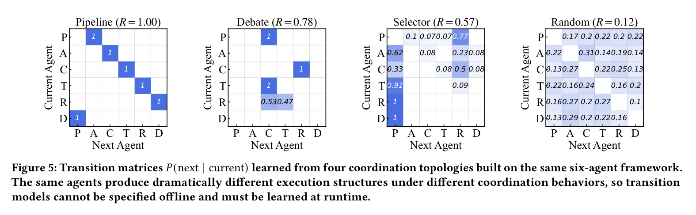
图 5：同一组六 Agent 在 Selector 与 Random 协调下产生不同转移矩阵，说明需要根据运行时行为学习后继关系。
由此，CacheScout 形成三项设计约束：系统必须知道 block 对应的 Agent identity；预测必须能适应动态分支；淘汰处在 serving 热路径上，决策只能是微秒级的轻量计算。
Core Design
在线学习“下一步可能是谁”，再决定缓存去留
CacheScout 位于 Agent framework 与 vLLM 之间，不改变 Agent 的选择逻辑，也不重写 attention kernel。它通过 Agent metadata 标记 anchor 所属角色，借助 block touch hook 记录访问，并在两次真实请求之间通过后台 warmup 预取高概率 anchor。
1. Transition Learner：学习转移关系
每次观察到 At = i → At + 1 = j，系统更新计数 Cij ← Cij + 1，并使用平滑项 ϵ 估计：
$$P_{ij}=P(A_{t+1}=j|A_t=i)=\frac{C_{ij}+\epsilon}{\sum_k(C_{ik}+\epsilon)}.$$
当前 Agent 为 i 时，转移矩阵的第 i 行给出下一步分布，最可能后继为 Ât + 1 = arg maxjPij。模型不需要训练，也不需要提前提供完整工作流；其状态仅是随 Agent 数量平方增长的小型计数矩阵。
2. Survival Scorer：估计 anchor 的未来存活价值
只看下一步概率还不够，因为某个 Agent 可能不是立即出现，却拥有很长、重算代价高的 anchor。理想目标是计算：
psurv(a; a0, K) = Pr (∃k ∈ [1, K], At + k = a ∣ At = a0).
精确枚举所有未来路径太慢。CacheScout 只保留 P(b|a) ≥ τ 的高概率边，形成稀疏图；从当前 Agent 做 BFS，得到到各候选 Agent 的最短 hop E[a]，再近似为：
$$\tilde p_{surv}(a)=1-\frac{\min(E[a],E_{max})}{E_{max}}.$$
每个 KV block 继承其 anchor 的存活分数，并与最近访问时间、block 大小结合为淘汰分数：
Score(b) = (p̃surv(ab) + δ)(e − λage(b) + δ)|b|.
ab 是 block 所属 anchor，age(b) 是距上次访问的调度步数，|b| 表示 token 数。低分 block 优先淘汰。这个公式将“未来会不会用”“刚才是否用过”“重新计算的成本”同时纳入决策；当转移预测缺乏区分度时，survival 分数相近，策略自然接近 LRU，而非持续依赖错误预测。
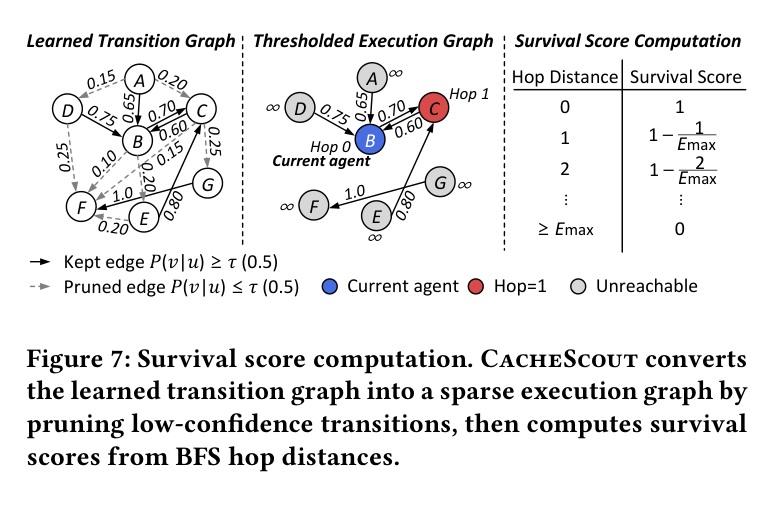
图 7：从转移图得到当前 Agent 到候选 Agent 的 hop distance，再将距离映射为未来存活分数，指导 KV block 淘汰。
3. Background Prefetch Coordinator：在预测足够可靠时预热
目标。 eviction 只能保护已经存在的 KV；如果未来会用的 anchor 已被淘汰或从未构建，仍会在真实请求到达时产生 Prefill。Prefetch 的目标是在两个 Agent turn 之间，提前恢复这段缺失的 anchor KV。
选择谁。 当前 Agent 为 at 时，Coordinator 从转移矩阵的当前行选择概率最高的直接后继：
a* = arg maxaP(a ∣ at).
如何预热。 假设 Planner 后最可能执行 Researcher。系统不直接向 GPU cache pool 写入 block，而是通过 serving engine 的标准 Prefill API 发一条后台 warmup request：内容为 Researcher 的 anchor（system prompt、工具定义和最小 user prompt），并设 max_tokens=1。这一个 token 只是使请求走完整推理路径；预取真正需要的结果是 Prefill 产生的 anchor KV。若外部 KV pool 中已有该 anchor，engine 将其恢复；否则按正常 Prefill 重建。真实 Researcher 请求到来时即可命中固定前缀，只处理新增的动态上下文。这样无需修改 allocator、block table 或 attention kernel，但预取的最小单位是完整 anchor，而不是任意 KV block。
何时有效。 warmup 仅在 turn 间空隙、可预测性 R ≥ Rmin 且未触及 rate limit 时运行；Random workflow 关闭它，避免错误预取与前台请求争抢 GPU。它还必须与 predictive eviction 配合：prefetch 负责把缺失 anchor 提前恢复，eviction 负责保护恢复后的 KV 不被 LRU 再次逐出。论文消融中，单独 warmup 对命中率最多增加约 1 个百分点；在 eviction 已开启、预热结果能被保护时，GAIA 的每轮延迟才从 347 ms 进一步降至 251 ms。
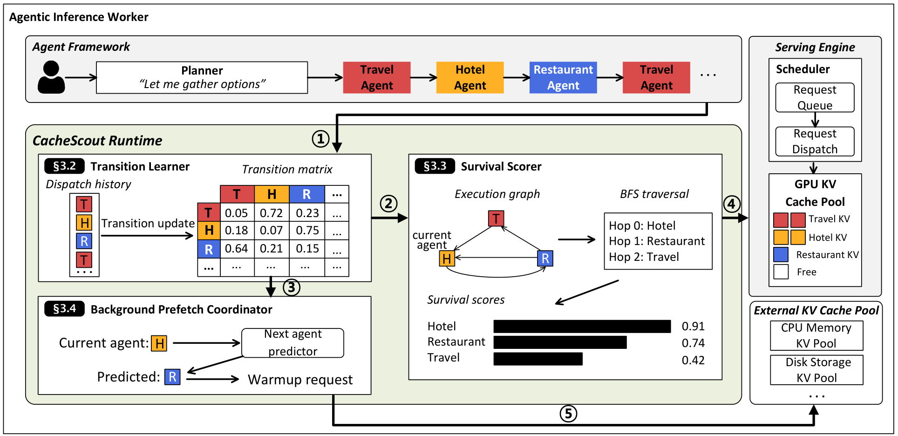
图 6：CacheScout 位于 Agent framework 与 serving engine 之间，在线学习转移、计算存活分数，并通过标准接口完成预取。
一轮请求完成后，BlockTouch 记录 block 所属 Agent 和访问时间；发生 Agent 切换时更新转移矩阵，并刷新阈值图与 BFS hop table；显存压力出现时计算 Score 并淘汰最低分 block；两轮之间再根据 R、rate limit 决定是否 warmup。论文实现约 2,300 行 runtime logic 和约 800 行 vLLM patch；24 个 Agent 的状态小于 25 KB，block touch 约 1 微秒，PredictSurvival 保持微秒级。
Evaluation
实验设置与问题
实验使用 8 张 NVIDIA RTX PRO 6000 Blackwell 96 GB，主模型为 Llama-3.1-8B-Instruct；所有系统采用相同的 vLLM 配置、GPU cache budget、解码参数和 prefix cache 设置。工作负载为 GSM8K、MT-Bench、GAIA、SWE-bench，均采用六 Agent 的 AutoGen SelectorGroupChat，下一 Agent 由 LLM 动态选择。它们覆盖短数学协作、多轮对话、工具密集型网页推理与长上下文软件工程四类场景。
基线是采用 reactive prefix caching 与 LRU 的 vLLM，以及以 TTL=0.3 s 在工具调用边界固定当前 session KV 的 Continuum。指标包括：KV hit rate（被缓存 token 占全部 prompt token 的比例）、TTFT、单轮端到端延迟与吞吐（completed agent turns/s）。实验依次检验：整体收益是否成立、eviction 与 prefetch 分别贡献多少、是否能扩展至大模型、在缓存压力和高负载下是否仍有效，以及运行时开销是否足够低。
主结果：减少高价值 anchor 的误淘汰
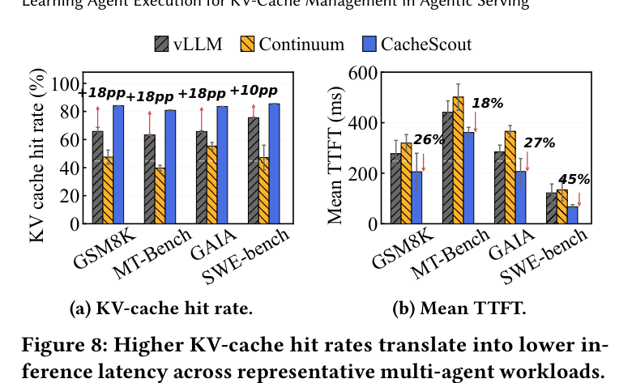
图 8：CacheScout 提高 KV 命中率并降低平均 TTFT；四组 workload 中命中率提升约 10–18 个百分点。
四个任务上的 KV hit rate 达到 81%–85%，比 vLLM 高 10–18 个百分点；平均 TTFT 降低 18%–45%。这说明 Agent-aware 保留策略确实把更多固定 anchor 留在了 cache 中，并将收益直接传递给 Prefill 延迟。
延迟分布也整体下移，而非只改善少数请求：中位数 TTFT 降低 14%–52%，三个任务的 P99 TTFT 降低 21%–52%；SWE-bench 的 P99 从 711 ms 降至 342 ms。图 9 的横轴为对数刻度 TTFT，蓝线整体比灰色 vLLM 和橙色 Continuum 更靠左，说明从中位请求到慢请求均有改善；其中 GSM8K、GAIA、SWE-bench 的中位 TTFT 分别降低 52%、51%、25%，MT-Bench 的改善较小，为 14%。
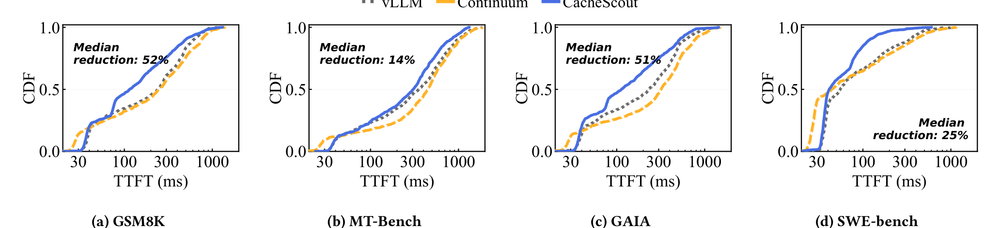
图 9：四个 workload 的 TTFT CDF。曲线越靠左，表示相同分位数下 TTFT 越低；CacheScout 的收益并非只来自少数请求。
端到端看，平均每轮延迟降低 29%–38%，峰值吞吐提高 19%–57%。图 10 直接将完整 CacheScout 与 vLLM、Continuum 对比：左图表示每次 Agent 调用从进入到完成的平均时间，右图表示系统被压到饱和时每秒完成的 Agent turn 数。它说明更高 KV hit rate 不只缩短首 token，也释放了计算和显存，从而提升并发处理能力。
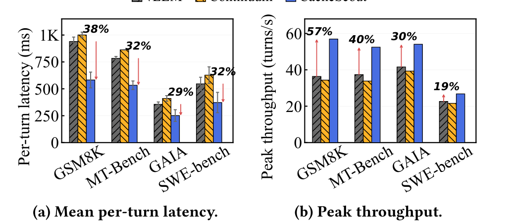
图 10：四类 workload 的平均每轮延迟与峰值吞吐。CacheScout 在所有 workload 中同时降低端到端延迟并提高吞吐。
随着 session arrival rate 增长，vLLM 在 KV cache 饱和后较早出现吞吐平台；CacheScout 的拐点更晚，并且在相同平均延迟预算下可承载 vLLM 的 1.7–12 倍、Continuum 的 4.2–16 倍到达率。图 11 分别给出四类 workload 下的平均/P90/P99 每轮延迟与吞吐曲线：蓝线不仅将均值压低，也延后了 P90/P99 上升和吞吐饱和的位置。因此它验证的是高负载稳定性，而不是单个固定并发点的偶然优势。
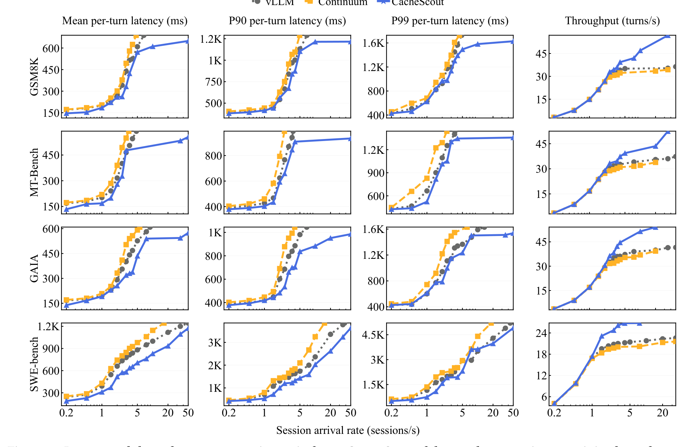
图 11：随 session 到达率上升的平均、P90、P99 每轮延迟与吞吐。CacheScout 延后 cache saturation，在更高负载下仍维持较低延迟和更高吞吐。
机制消融：eviction 是主收益，prefetch 提供条件性加速
论文比较 vLLM、仅启用 predictive eviction、完整 CacheScout。单独 predictive eviction 已使命中率相对 vLLM 提高 18–22 个百分点，并带来更低的 TTFT、每轮延迟和更高吞吐，说明系统最主要的收益来自少误删高价值 anchor。
Background prefetch 对命中率额外贡献至多约 1 个百分点，原因很重要：这些 workload 的中位 Agent turn 没有可单独预热的完整前缀；更关键的是，若没有 predictive eviction，warmup 重建的 KV 可能在预测 Agent 到达前又被 LRU 逐出。因此不能把它理解为“预取本身提升所有任务的命中率”。它在存在可利用时间空隙、且淘汰策略能保护预热结果的场景更有价值：在 GAIA 上，完整系统将每轮延迟从 eviction-only 的 347 ms 进一步降至 251 ms，即额外降低 28%。图 12 中完整方案的峰值吞吐相对基线提高 8%–19%。
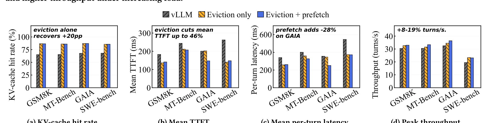
图 12：机制消融。黄色为仅 predictive eviction，蓝色为 eviction 加 prefetch；前者恢复大部分命中率，后者主要在部分 workload 继续压低延迟、提高吞吐。
模型规模、缓存压力与高负载鲁棒性
在 Qwen3-235B-A22B-FP8、4 张 H200 的大模型配置上，CacheScout 在四个 workload 的命中率仍提高 7–13 个百分点。对 prefill 更昂贵的 SWE-bench，随着到达率从 0.2 增至 2.0 sessions/s，平均 TTFT 在每个负载点降低 33%–54%，每轮延迟降低 26%–36%；当 vLLM 吞吐饱和在 5.2 turns/s 时，CacheScout 可达到 7.2 turns/s，即提高 37%。
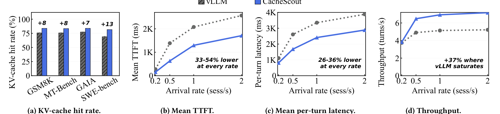
图 13：Qwen3-235B-A22B-FP8、4 张 H200 上的结果。左图验证四个 workload 的命中率提升；后三图在 SWE-bench 上展示随负载增加的延迟与吞吐优势。
缓存预算从 100 到 200 blocks 时，CacheScout 的命中率基本稳定在 86%–87%；vLLM 则从 64.4% 缓慢升至 76.6%，需要更多 GPU cache 才能接近前者。负载从 0.2 增至 50 sessions/s 时，CacheScout 的命中率也维持在 86%–87%，vLLM 约为 65%–68%。此外，关闭 adaptive prefetch gate 会让无谓 warmup 与前台推理竞争，在小缓存配置下使每轮延迟最多上升 22%；这验证了“预取必须受预测可信度约束”的设计选择。
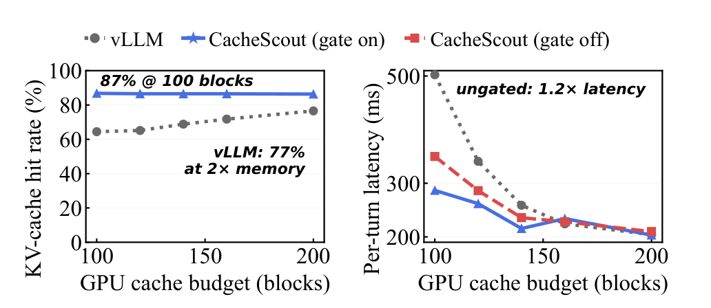
图 14：GPU cache budget 敏感性。左图显示 CacheScout 在紧张缓存下仍有较高命中率；右图显示关闭 prefetch gate 会因无谓 warmup 增加延迟。
运行时开销
Coordinator 的状态在 24 个 Agent 时仍低于 25 KB。ObserveTouch 约为每个 block 1 微秒，PredictSurvival 即使在 24 个 Agent 时也在 6 微秒内完成。转移图构建与 warmup 均在关键路径之外运行，因此论文认为缓存策略本身的控制开销相对于 LLM serving 延迟可以忽略。
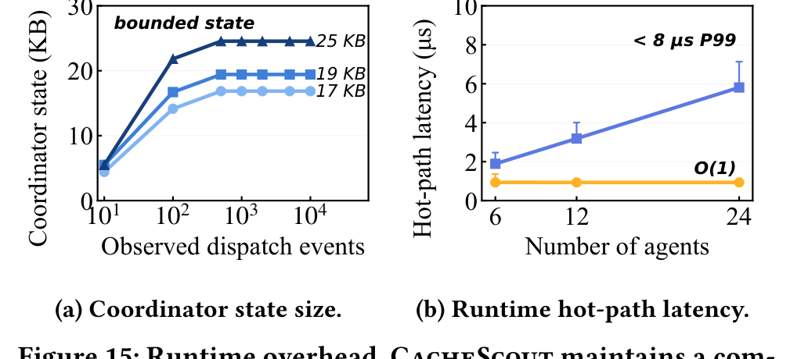
图 15：运行时开销。状态随 Agent 数增长仍低于 25 KB；block touch 与 survival 预测维持微秒级，不成为 serving 热路径瓶颈。
Limitations
CacheScout 的一阶 Markov 模型只利用相邻 Agent，因此无法表达必须依赖较长历史才能判定的路径。强随机 workflow 的收益会接近 LRU；冷启动、Selector 策略变化和 prompt fingerprint 漂移也会造成短时间失准。实验主要集中在六 Agent AutoGen 和 vLLM，跨节点路由、MoE 专家并行、租户公平性与复杂工具生命周期尚未完整验证。
与 KVFlow 相比，CacheScout 在线学习动态转移，而非预先提供 Step Graph；与 Continuum 相比，它优先保护跨 Agent、跨 session 的 anchor，而不只是工具等待期间的当前 session；与 Pythia 相比，它不进行集群级资源编排，但可在更少的工作流先验下改进单机或单服务实例的缓存决策。